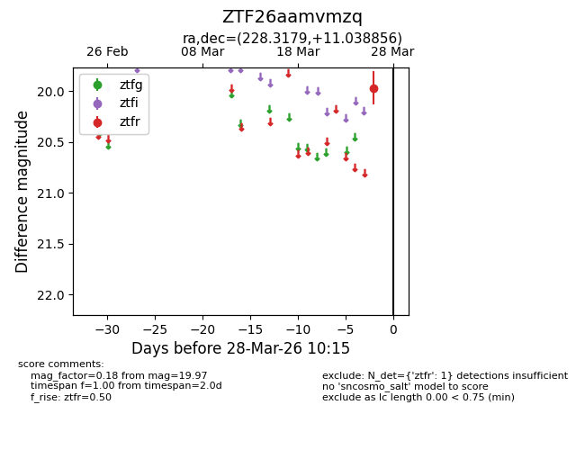
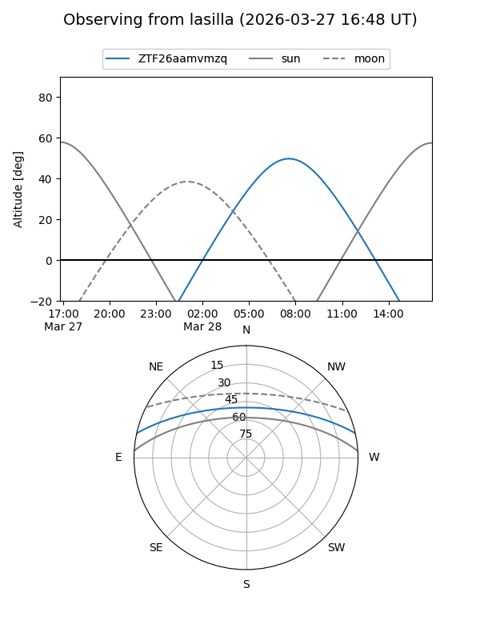
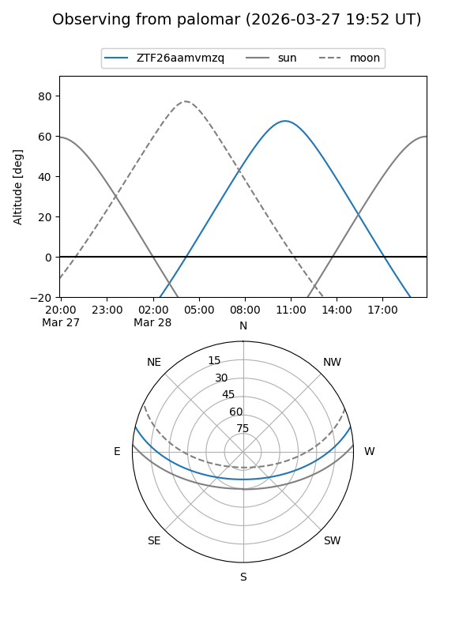

ZTF26aamvmzq
Target ZTF26aamvmzq at 2026-03-28 10:18
Aliases and brokers:
FINK: link
Lasair: link
ALeRCE: link
alt names
ZTF26aamvmzq (ztf,fink_ztf)
Coordinates:
equatorial (ra, dec) = 228.3179,+11.03886
equatorial (HMS+DMS) = 15:13:16.30,+11:02:19.88
galactic (l, b) = (14.1048,+53.01798)
Flags:
Photometry:
last ztfr=19.97
1 ztfr detections
Lightcurve

Visibility


Additional plots